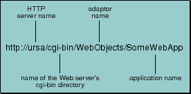
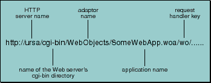

Table of Contents
Table of Contents  Next Section
Table of Contents
Next Section
Table of Contents  Previous Section
Previous Section
If the request is the first one for a given user session, the request URL looks like the URL shown in Figure 20.

Figure 20. URL to Access a WebObjects Application

Figure 21. WebObjects URL in Existing Session
Table of Contents Next Section